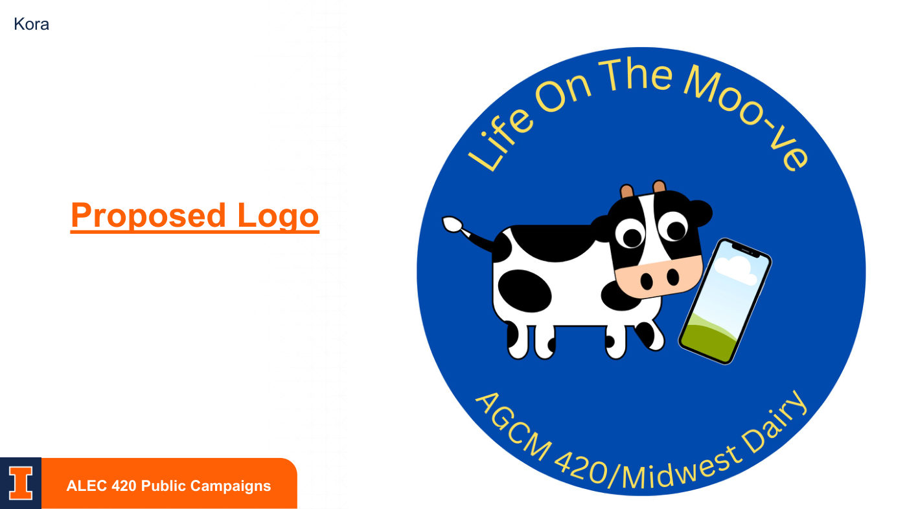
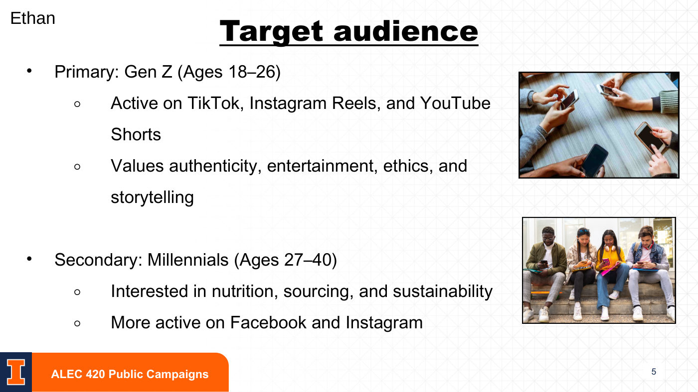
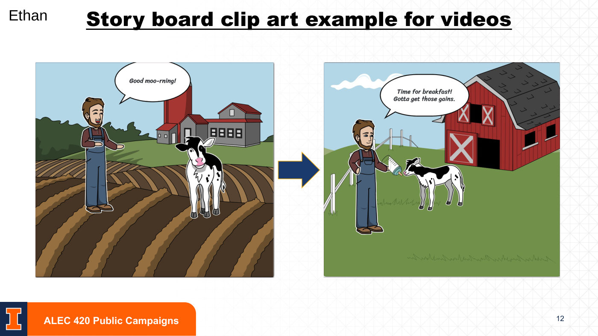

"Life on the Moo-ve": a social media campaign for Midwest Dairy
Our team built a public information campaign for Midwest Dairy to counter misinformation about calf welfare, told from the point of view of a dairy calf. Short "Day in the Life" Reels on TikTok, Instagram, and Facebook answer the questions Gen Z actually asks ("Why are calves raised separately?") in the calf's own voice, while longer YouTube Q&A videos keep the facts available over time. The plan included a logo, sample messages, storyboards, a timeline keyed to fall calving, and success metrics.
We pitched the campaign to Alyson Fendrick, Midwest Dairy's marketing and communications manager, in two client meetings. Her feedback, including the push to add YouTube long-form content, changed our platform mix. Pitching to a real client for a possible rollout made this the most professional project of my program.
- My role
- I owned the target audience and preferred mediums research and presented those sections to the client. I also created the storyboards and clip-art panels that showed how each video would run, and I made myself available to fill gaps wherever the team needed help.
- Skills demonstrated
- Audience analysis (Gen Z 18–26 primary, millennials 27–40 secondary, with platform behavior for each); channel strategy that matched short-form and long-form content to what each platform does best; visual storytelling through the storyboards; and client communication, taking feedback from a real stakeholder and revising the plan around it.
- Audience analysis
- Channel strategy
- Storyboarding
- Client communication
- Teamwork